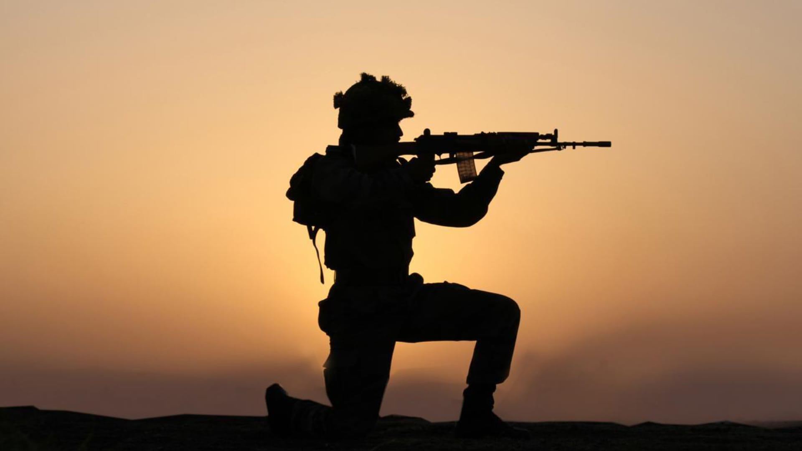

15th August || 26th January
“Either I will come back after hoisting the tricolor, or I will come back wrapped in it, but I will come back for sure.” – Capt. Vikram Batra, PVC
The Indian Army is the land-based branch of the Indian Armed Forces. It is the world's second-largest standing army and the largest army. The President of India is the Supreme Commander of the Indian Army, and it is commanded by the Chief of Army Staff (COAS), who is a four-star general. Two battalions of the Indian Army have been awarded the "Nations in conflict" peacekeeping medal. The Indian Army has a regimental system but is operationally and geographically split into seven commands, with the basic field formation being a division. It is an all-volunteer force and comprises more than 81,000 active troops and a support element of close to 1,160,000 troops.